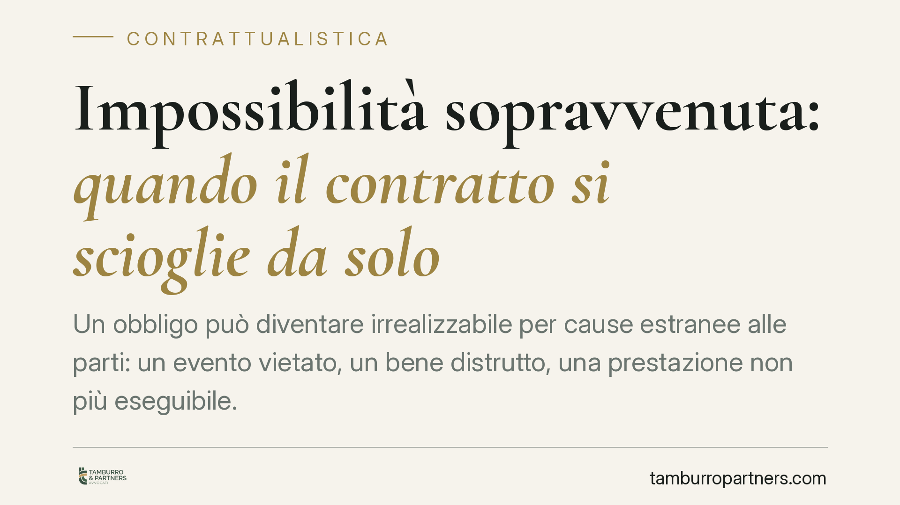

Impossibilità sopravvenuta: quando il contratto si scioglie da solo
Un obbligo può diventare irrealizzabile per cause estranee alle parti: un evento vietato, un bene distrutto, una prestazione non più eseguibile. In questi casi il contratto può sciogliersi senza bisogno di una domanda giudiziale. Vediamo quando accade davvero, quali sono i limiti e come tutelarsi.

Il fatto normativo
L'impossibilità sopravvenuta è la situazione in cui una prestazione, valida al momento della stipula, diventa ineseguibile per una causa non imputabile al debitore. Il codice civile la disciplina agli articoli 1256 e 1463 e seguenti.
L'art. 1256 c.c. stabilisce che l'obbligazione si estingue quando la prestazione diventa impossibile per una causa non imputabile al debitore. Non basta che l'adempimento sia diventato più oneroso o difficile: l'impossibilità deve essere oggettiva (riguardare la prestazione in sé) e assoluta (non superabile con la normale diligenza).
Inquadramento: come opera lo scioglimento
Nei contratti a prestazioni corrispettive interviene l'art. 1463 c.c.: se la prestazione di una parte diventa impossibile, quella parte non può pretendere il corrispettivo e deve restituire quanto già ricevuto secondo le regole della ripetizione dell'indebito. Lo scioglimento opera automaticamente (*di diritto*), senza necessità di una pronuncia costitutiva del giudice, che si limita ad accertarlo.
Il sistema prevede poi tre varianti:
- Impossibilità parziale (art. 1464 c.c.): l'altra parte ha diritto a una riduzione proporzionale della propria prestazione, oppure può recedere se non ha un interesse apprezzabile all'adempimento parziale.
- Contratti con effetti traslativi o costitutivi (art. 1465 c.c.): se la proprietà o un diritto è già passato con il consenso, il rischio del perimento del bene grava sull'acquirente (*res perit domino*), che resta tenuto al corrispettivo anche se il bene perisce prima della consegna.
- Mora del creditore (art. 1466 c.c.): se il creditore è in mora nel ricevere la prestazione, il rischio dell'impossibilità sopravvenuta si sposta su di lui.
La Corte di Cassazione, con la sentenza 29 marzo 2019 n. 8766, ha ribadito che l'impossibilità rilevante può derivare anche da un provvedimento dell'autorità (*factum principis*) che vieti l'attività oggetto del contratto. È il caso, ad esempio, dell'organizzatore di un evento lirico impossibilitato a tenere lo spettacolo per un divieto amministrativo sopravvenuto: la prestazione diventa oggettivamente ineseguibile e il contratto si scioglie.
Implicazioni pratiche
Per chi opera nella contrattualistica, la distinzione decisiva è tra impossibilità ed eccessiva onerosità. La prima estingue l'obbligazione; la seconda (art. 1467 c.c.) apre soltanto alla risoluzione, con possibilità per la controparte di offrire una modifica equa. Confondere i due piani espone a errori nella gestione della crisi del contratto.
Un secondo punto sensibile riguarda la restituzione. Lo scioglimento automatico non cancella i pagamenti già effettuati: chi ha versato un acconto per una prestazione divenuta impossibile ha diritto alla restituzione. Chi ha incassato deve prepararsi a restituire, salvo che sia già intervenuto un valido effetto traslativo.
Attenzione anche alla temporaneità. Se l'impossibilità è solo temporanea (art. 1256, secondo comma, c.c.), l'obbligazione non si estingue finché perdura; il debitore non risponde del ritardo, ma l'obbligazione si estingue solo se l'impossibilità permane fino a quando il creditore non ha più interesse a conseguire la prestazione.
Infine, la ripartizione del rischio nei contratti traslativi va valutata già in fase di redazione: chi acquista un bene può trovarsi a pagare il prezzo pur non ricevendolo, se la proprietà è passata prima della consegna e il bene perisce senza colpa del venditore.
Cosa fare in concreto
- Verificate la natura dell'impedimento: accertate se la prestazione è divenuta oggettivamente e assolutamente impossibile, oppure solo più onerosa. Ne discendono rimedi diversi.
- Documentate la causa non imputabile: raccogliete provvedimenti amministrativi, perizie o prove dell'evento che ha reso impossibile l'adempimento.
- Regolate le restituzioni: ricostruite acconti e pagamenti già eseguiti per gestire correttamente la ripetizione di quanto versato.
- Prevedete clausole di ripartizione del rischio: nei contratti traslativi disciplinate il momento di passaggio del rischio e le ipotesi di forza maggiore.
- Consigliamo di formalizzare tempestivamente le comunicazioni alla controparte, evitando comportamenti che possano configurare inadempimento o mora.
Disclaimer
Contributo informativo a cura di Tamburro & Partners - Avv. Giuseppe Tamburro. Non costituisce parere legale.
Ogni contratto ha il suo equilibrio.
Se vuoi una revisione delle clausole o una redazione su misura, scrivi allo studio. Ti rispondiamo entro un giorno lavorativo.